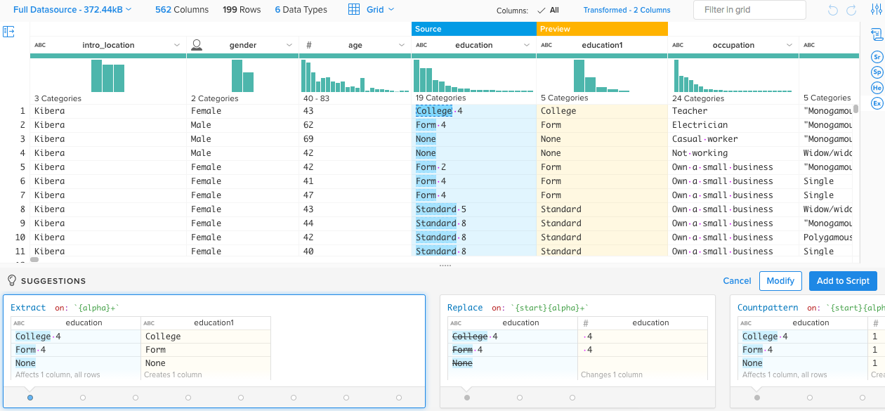

Dataproofer
Spell check for data
Jonathan Page
UHERO, University of Hawaii
Spell check identifies potential spelling errors.
Dataproofer identifies potential data errors.
Primary Use Case
Quick check of data quality
immediately following data collection
Strengths
- Fast, automated quality checks
- Cross-platform (Window, OS X, Linux)
- Supports XLSX, XLS, TSV, CSV, PSV, and Google Spreadsheets
- Customizable checks
Weaknesses
- Creating custom checks requires some programming experience
- Not for editing
- Does not like large data (> 500 KB)
- Does not support statistical software data formats
Motivation
Working with survey data, we want to quickly identify the following missing values:
Before the Custom Check
field.csv
Anatomy of a Custom Check
customDataprooferTest.name("Missing (NA)")
.description("If a cell contains an NA value.")
.conclusion("Check for any patterns in missing values.")
.methodology(cellMethod(isMissingCheck))
isMissingCheck Function
var isMissingCheck = function(cell) {
if (cell === 'NA' || cell === 'N/A' ||
cell == -99 || cell == -98) {
return true;
}
return false;
}
OpenRefine
openrefine.org
Formerly Google Refine
OpenRefine: Strengths
- Open source software
- Extensible
custom checks/filters can be written in Clojure, Python/Jython, or Refine's own expression language
OpenRefine: Weaknesses
- Can't handle large files (> 500 KB)
- Feels slow
- No easy way to track changes (not very reproducible)
Trifacta Wrangler
trifacta.com
Formerly Stanford Data Wrangler
Trifacta: Scripting Without Code

Trifacta: Strengths
- Interactive histograms
- Script builder
- Reproducible data cleaning
- Takes a 500 KB sample from large datasets
Trifacta: Weaknesses
- Requires an internet connection (may have to setup proxy settings)
- May not be appropriate for confidential data
Use Dataproofer for
- Data quality checks for data entry
- Nice high-level overview of potential data errors
- First check after downloading or creating a new dataset
If you need more,
consider OpenRefine and Trifacta Wrangler.